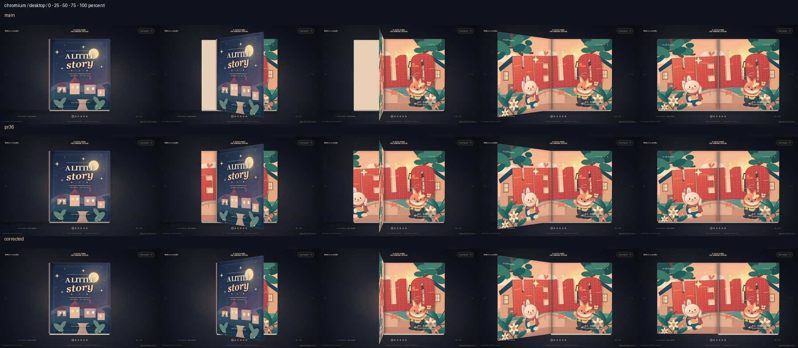
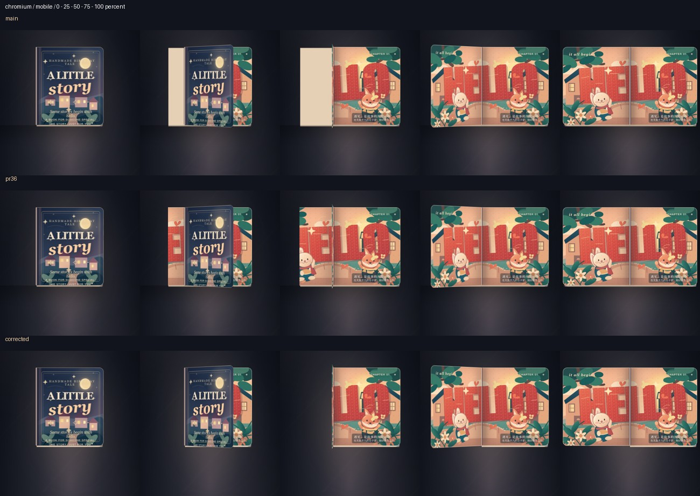
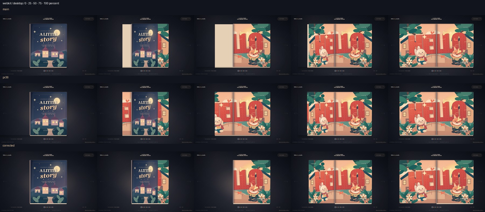
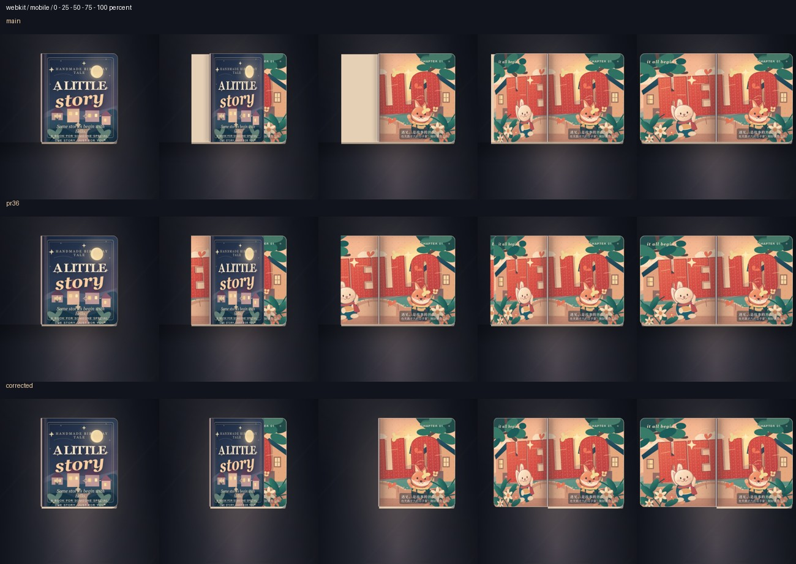

2026-11-02 · Actual local browser captures · No deployment / no visual sign-off yet.
Main: 88fcc365. PR #36: 41db2d6. Corrected: hardcover back owns left artwork; paper stack stays on right during cover motion. Interior segmented paper is unchanged.
Each unedited continuous recording: closed → HELLO → GROW → HELLO → closed. Blank first navigation frames are recording startup, before the book is ready. Mobile contact sheets use the same crop in all three rows; recordings preserve the full viewport.
Findings and reproduction · Interior pixel comparison
Rows: main → PR #36 → corrected. Columns: 0 / 25 / 50 / 75 / 100%.

Rows: main → PR #36 → corrected. Columns: 0 / 25 / 50 / 75 / 100%.

Rows: main → PR #36 → corrected. Columns: 0 / 25 / 50 / 75 / 100%.

Rows: main → PR #36 → corrected. Columns: 0 / 25 / 50 / 75 / 100%.
